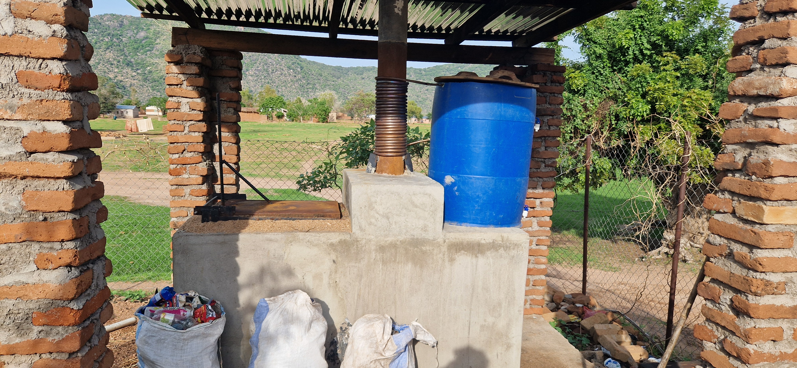
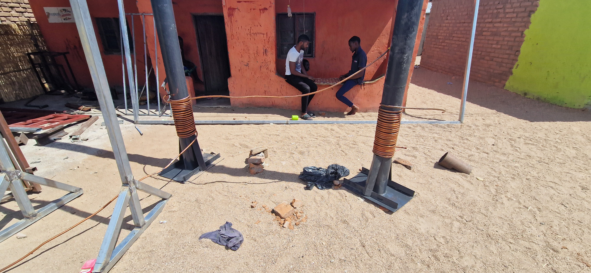
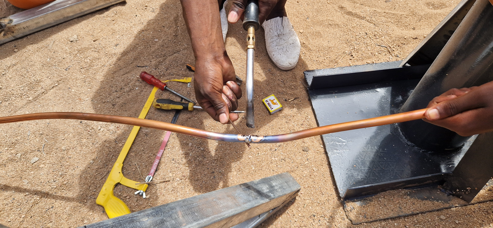
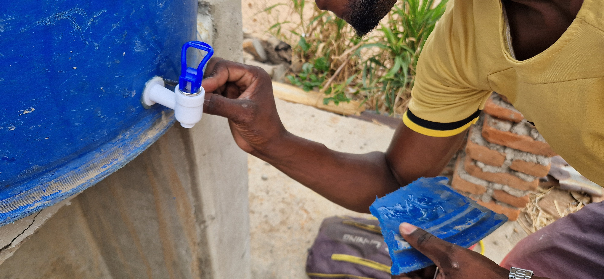
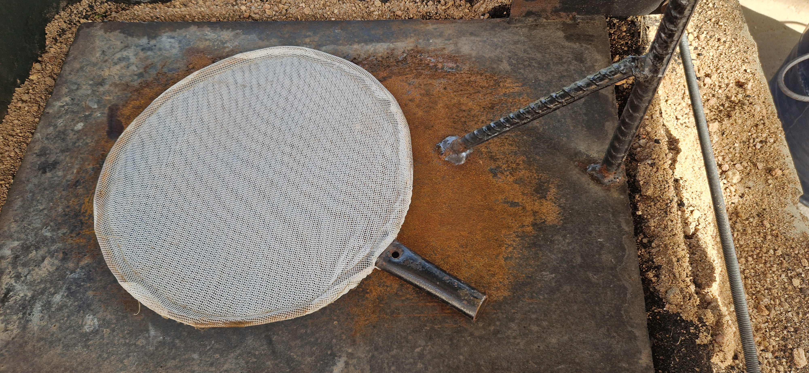

Heat exchanger
The water heating systems were installed on two De Montfort Mark 8A incinerators: one at Billy’s Clinic and one at Sustainable Cape Maclear’s waste deposit site. The purpose of these systems is to recover heat from the incineration process and repurpose it to heat water for sanitary use, improving resource efficiency while reducing reliance on external energy sources.

This page details how the heat exchanger was designed, assembled, and installed, providing step-by-step insights into the construction process, operational principles, and maintenance requirements. By documenting the challenges encountered and the solutions developed, this guide serves as a reference for replicating similar heat recovery systems on other small-scale incinerators, particularly in resource-limited settings where sustainable solutions are essential.
1 Assembly Manual
The heat exchanger is a copper pipe coiled around the incinerator chimney, transferring heat to a 210 l plastic drum filled with water. The water heating mechanism relies solely on natural convection and does not required additional work input.
The assembly required several key steps:
- Winding the copper pipe. The pipe was initially purchased in the form of a coil. To wrap it securely around the chimney, it has to be manually bent to fit the chimney’s external diameters, as closely as possible, so the heat transfer is maximized.

Preventing cracks during bending. Copper pipes are prone to cracking when bent, therefore a precautionary method was used to minimize the risk of damage. Before bending, a mixture of water and soap was poured into the pipe and then frozen using ice cubes in a bucket. The frozen liquid inside helped maintain the pipe’s structural integrity, allowing for it to be bent without collapsing or breaking.
Fixing cracks. In cases where small cracks did appear, a blowtorch was used to seal them to ensure structural integrity for water circulation.

- Positioning the pipes on the chimney. The pipe was wrapped as tightly as possible around the chimney to maximize the heat transfer.
- Connecting the pipes to the water storage system. The ends of the copper pipe were mounted to the 210 l plastic drum that served as the water storage unit. Two holes were drilled into the drum to allow for the water from the pipes to enter and exit the drum. An adhesive sealant was applied around the openings to ensure airtight connection and prevent leaks.

- Final adjustments. To provide insulation and reduce the heat loss (maintaining higher water temperature for extended periods) the drum was covered with a wooden lid. Two taps were drilled into the plastic drum to drain warm at different heights. Two taps are needed if not enough waste is burnt for the entire volume of water to heat up; if this is the case, the water can be drained from the higher tap, relying on introduced temperature gradient in the tank (warmer water stays at the top before it mixes with cold water). Finally, a skimmer made out of steel wire and mosquito net was made to clean the water stored in the plastic drum.

2 Costs
To ensure consistency across reporting, all the cost calculations were converted from MWK to USD with an exchange rate of 2,000 MWK/USD.
| Category | Details | Price (MWK) | Price (USD) |
|---|---|---|---|
| Copper pipes | 15 meters, 1/2” diameter | 200,000 | 100.00 |
| Plastic drum | 210 L capacity | 100,000 | 50.00 |
| Taps | 2 drilled into each drum | 4,000 | 2.00 |
| Steel wire | - | 18,500 | 9.25 |
| Labor | Assembling & pipe bending | 58,500 | 29.25 |
| Lid | To cover the plastic drum | 15,000 | 7.50 |
| Adhesive | Ensures air-tightness of the holes | 5,250 | 2.61 |
| Total | - | 401,250 | 200.63 |
3 Operation
The heat exchanger operates thanks to thermal convection, using temperature gradient in the tank to naturally circulate water. The process works as follows:
- Cold water enters the copper pipes from the bottom of the plastic drum.
- As the incinerator chimney heats up, the copper pipes absorb the heat, heating the water in the pipes.
- Natural convection causes the heated water to rise through the pipes. Hot water exits the pipe at top of the plastic drum, while colder water flows in the copper pipe from the bottom of the drum, maintaining continuous circulation.
Under normal operating conditions:
- The system takes approximately 40 minutes before the first heated water exits the pipes.
- The water laving the copper coil reaches a maximum temperature of 70°C.
- Stored water inside the drum stabilizes at approximately 45°C, good for sanitary purposes: hand washing and cleaning in the clinic.
- To ensure that no solid particles contaminate the water, a water skimmer is used to filter out debris before use.
4 Maintenance
The heat exchanger requires minimal maintenance to ensure long-term efficiency. Key maintenance tasks include:
- Checking for leaktightness. Regularly inspecting the pipe connections at the drum for any signs of leakage and resealing if necessary.
- Cleaning the water skimmer. Ensuring that the skimmer remains free of debris to prevent clogging and maintain water quality.
- Inspecting the copper pipes. Monitoring the pipes for cracks or wear, particularly in areas exposed to high heat stress.
- Preventing blockages. Occasionally flushing the pipes with clean water to remove any potential mineral buildup inside.
Since the system operates passively using thermal convection, there are no mechanical parts that require frequent servicing, making it a low-maintenance solution for heat recovery.
5 Safety Precautions
To ensure safe operation of the heat exchanger, the following precautions should be followed:
- Pipe handling. When bending copper pipes, always use the water-freezing method to prevent cracks.
- Blowtorch use. If cracks need to be repaired, use the blowtorch carefully and ensure it is handled by trained personnel.
- Avoid drum overheating. The plastic drum should be monitored to ensure it does not exceed its heat tolerance limits.
- Proper sealing. The adhesive around pipe openings should be regularly checked to prevent air leaks, which could disrupt the convection process.
- Heat protection. Since the pipes reach high temperatures, operators should wear protective gloves when handling them to avoid burns.
By following these precautions, the heat exchanger can continue to operate safely and efficiently, providing a reliable supply of warm water for medical and personal use.